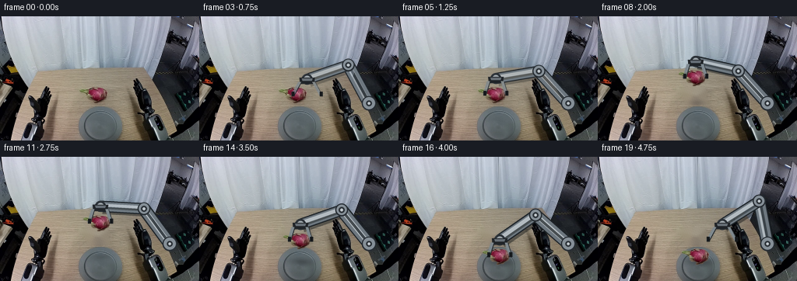
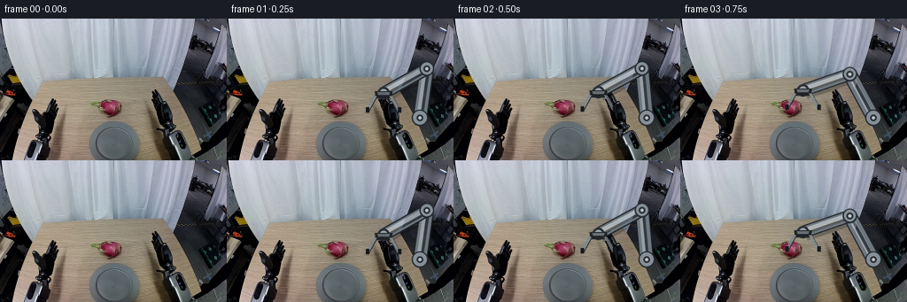

CODING AGENTS AS PIXEL WORLD MODELS
traex/GPT-5.6-Sol · common50_0041
点击播放 · 原生 RGB 像素
逐轮保存的候选
回放视频、检查图与代码变化。
每份候选均可单独播放。实际图片检查记录在下方工具轨迹中。
候选 01播放与检查图
点击播放 · 原生 RGB 像素


展开代码变化
--- 上一保存版本
+++ 本次保存版本
@@ -0,0 +1,313 @@
+from pathlib import Path
+import math
+import cv2
+import numpy as np
+from PIL import Image, ImageDraw
+import artifact_io
+
+CASE = Path(__file__).resolve().parent
+W, H = 256, 160
+N = 20
+AA = 4
+
+
+def smooth(t):
+ t = float(np.clip(t, 0.0, 1.0))
+ return t * t * (3.0 - 2.0 * t)
+
+
+def mix(a, b, t):
+ t = smooth(t)
+ return (a[0] + (b[0] - a[0]) * t,
+ a[1] + (b[1] - a[1]) * t)
+
+
+def extract_fruit(rgb):
+ """Color-seeded GrabCut: retain skin, green bracts, and attached shadows."""
+ bgr = rgb[:, :, ::-1].copy()
+ hsv = cv2.cvtColor(bgr, cv2.COLOR_BGR2HSV)
+ gc = np.full((H, W), cv2.GC_BGD, np.uint8)
+ gc[87:115, 99:143] = cv2.GC_PR_BGD
+
+ r, g, b = [rgb[:, :, i].astype(np.int16) for i in range(3)]
+ pink = (r > 70) & (r > g * 1.19) & (r > b * 1.10)
+ green = (hsv[:, :, 0] > 34) & (hsv[:, :, 0] < 95) & \
+ (hsv[:, :, 1] > 42) & (hsv[:, :, 2] > 35)
+ seeds = (pink | green)
+ seeds[:87] = False; seeds[115:] = False
+ seeds[:, :99] = False; seeds[:, 143:] = False
+ gc[seeds] = cv2.GC_FGD
+ # Certain rim pixels remain background, which stabilizes the small extraction.
+ gc[87, 99:143] = cv2.GC_BGD
+ gc[114, 99:143] = cv2.GC_BGD
+ gc[87:115, 99] = cv2.GC_BGD
+ gc[87:115, 142] = cv2.GC_BGD
+ bg_model = np.zeros((1, 65), np.float64)
+ fg_model = np.zeros((1, 65), np.float64)
+ cv2.grabCut(bgr, gc, None, bg_model, fg_model, 6, cv2.GC_INIT_WITH_MASK)
+ mask = ((gc == cv2.GC_FGD) | (gc == cv2.GC_PR_FGD)).astype(np.uint8)
+
+ # Keep only matter connected to the colored dragon-fruit core.
+ n, labels, stats, _ = cv2.connectedComponentsWithStats(mask, 8)
+ wanted = set(np.unique(labels[seeds]))
+ wanted.discard(0)
+ mask = np.isin(labels, list(wanted)).astype(np.uint8)
+ mask = cv2.morphologyEx(mask, cv2.MORPH_CLOSE,
+ cv2.getStructuringElement(cv2.MORPH_ELLIPSE, (3, 3)))
+ # A tiny feather reproduces optical antialiasing without deforming the object.
+ alpha = cv2.GaussianBlur(mask.astype(np.float32), (3, 3), 0.55)
+ alpha = np.clip(alpha, 0, 1)
+ ys, xs = np.where(mask > 0)
+ x0, x1 = max(0, xs.min()-2), min(W, xs.max()+3)
+ y0, y1 = max(0, ys.min()-2), min(H, ys.max()+3)
+ return rgb[y0:y1, x0:x1].copy(), alpha[y0:y1, x0:x1].copy(), \
+ (x0, y0), mask
+
+
+def clean_background(rgb, object_mask):
+ # Remove fruit plus its compact contact shadow; Telea follows the local wood grain.
+ removal = cv2.dilate(object_mask, cv2.getStructuringElement(
+ cv2.MORPH_ELLIPSE, (7, 5)), iterations=1)
+ # The original dark contact fringe sits immediately below the skin.
+ fringe = np.zeros_like(removal)
+ fringe[105:114, 111:141] = 1
+ removal = np.maximum(removal, fringe)
+ bgr = rgb[:, :, ::-1]
+ cleaned = cv2.inpaint(bgr, (removal * 255).astype(np.uint8), 4,
+ cv2.INPAINT_TELEA)[:, :, ::-1]
+ # Reintroduce fine local sensor grain from neighboring pixels to avoid a plastic patch.
+ yy, xx = np.indices((H, W))
+ region = removal.astype(bool)
+ noise = (((xx * 17 + yy * 29) % 7) - 3).astype(np.int16)
+ out = cleaned.astype(np.int16)
+ out[region] += noise[region, None] // 2
+ return np.clip(out, 0, 255).astype(np.uint8)
+
+
+def alpha_blend(base, rgba):
+ a = rgba[:, :, 3:4].astype(np.float32) / 255.0
+ return np.clip(base.astype(np.float32) * (1-a) +
+ rgba[:, :, :3].astype(np.float32) * a,
+ 0, 255).astype(np.uint8)
+
+
+def overlay_canvas():
+ return Image.new('RGBA', (W*AA, H*AA), (0, 0, 0, 0))
+
+
+def poly(draw, pts, fill):
+ draw.polygon([(round(x*AA), round(y*AA)) for x, y in pts], fill=fill)
+
+
+def ellipse(draw, box, fill, outline=None, width=1):
+ box = tuple(round(v*AA) for v in box)
+ draw.ellipse(box, fill=fill, outline=outline, width=max(1, round(width*AA)))
+
+
+def line_poly(a, b, halfwidth):
+ dx, dy = b[0]-a[0], b[1]-a[1]
+ d = max(1e-6, math.hypot(dx, dy))
+ nx, ny = -dy/d*halfwidth, dx/d*halfwidth
+ return [(a[0]+nx, a[1]+ny), (b[0]+nx, b[1]+ny),
+ (b[0]-nx, b[1]-ny), (a[0]-nx, a[1]-ny)]
+
+
+def ik_elbow(shoulder, wrist, l1=56.0, l2=56.0):
+ dx, dy = wrist[0]-shoulder[0], wrist[1]-shoulder[1]
+ d = np.clip(math.hypot(dx, dy), abs(l1-l2)+0.01, l1+l2-0.01)
+ direction = math.atan2(dy, dx)
+ offset = math.acos(np.clip((d*d + l1*l1 - l2*l2)/(2*d*l1), -1, 1))
+ # Screen-positive branch gives an elbow above/right of the moving wrist.
+ angle = direction + offset
+ return (shoulder[0] + l1*math.cos(angle),
+ shoulder[1] + l1*math.sin(angle))
+
+
+def draw_robot(frame, wrist, jaw_open, opacity=1.0):
+ """Draw a stable, constant-link articulated arm and parallel gripper."""
+ shoulder = (218.0, 112.0)
+ elbow = ik_elbow(shoulder, wrist)
+ canvas = overlay_canvas()
+ d = ImageDraw.Draw(canvas, 'RGBA')
+ op = lambda a: int(a * opacity)
+
+ # Soft cast shadows under the two rigid links.
+ poly(d, line_poly((shoulder[0]+3, shoulder[1]+4),
+ (elbow[0]+3, elbow[1]+4), 6.8), (9, 12, 15, op(70)))
+ poly(d, line_poly((elbow[0]+3, elbow[1]+4),
+ (wrist[0]+3, wrist[1]+4), 6.0), (9, 12, 15, op(62)))
+
+ # Rear link: dark seam, steel body, and a narrow directional highlight.
+ for a, b, hw in [(shoulder, elbow, 6.7), (elbow, wrist, 5.8)]:
+ poly(d, line_poly(a, b, hw+1.4), (31, 37, 43, op(245)))
+ poly(d, line_poly(a, b, hw), (109, 119, 127, op(255)))
+ poly(d, line_poly((a[0]-1.0, a[1]-1.2),
+ (b[0]-1.0, b[1]-1.2), hw*0.42),
+ (181, 190, 197, op(205)))
+ poly(d, line_poly((a[0]+1.5, a[1]+1.8),
+ (b[0]+1.5, b[1]+1.8), hw*0.24),
+ (65, 73, 80, op(170)))
+
+ # Mechanically consistent rotary joints.
+ for x, y, ro in [(shoulder[0], shoulder[1], 9.2),
+ (elbow[0], elbow[1], 8.2)]:
+ ellipse(d, (x-ro, y-ro, x+ro, y+ro), (39, 45, 51, op(255)))
+ ellipse(d, (x-ro+1.5, y-ro+1.2, x+ro-1.5, y+ro-1.8),
+ (133, 143, 151, op(255)))
+ ellipse(d, (x-3.8, y-3.8, x+3.8, y+3.8), (45, 51, 57, op(255)))
+ ellipse(d, (x-1.8, y-1.8, x+1.8, y+1.8), (191, 199, 204, op(245)))
+
+ # Wrist bearing and compact black gripper body.
+ x, y = wrist
+ ellipse(d, (x-7, y-7, x+7, y+7), (43, 49, 55, op(255)))
+ ellipse(d, (x-4.5, y-4.5, x+4.5, y+4.5), (156, 164, 169, op(255)))
+ poly(d, [(x-10, y-2), (x+10, y-2), (x+9, y+6), (x-9, y+6)],
+ (32, 36, 40, op(255)))
+ poly(d, [(x-7, y-1), (x+7, y-1), (x+6, y+2), (x-6, y+2)],
+ (102, 111, 118, op(240)))
+
+ # Parallel jaws taper toward the fruit. jaw_open is half spacing at tips.
+ top_half = 8.5
+ tip_half = jaw_open
+ y0, y1 = y+4, y+21
+ left = [(x-top_half-2.3, y0), (x-top_half+1.4, y0),
+ (x-tip_half+1.8, y1), (x-tip_half-2.0, y1)]
+ right = [(x+top_half-1.4, y0), (x+top_half+2.3, y0),
+ (x+tip_half+2.0, y1), (x+tip_half-1.8, y1)]
+ for finger in (left, right):
+ poly(d, finger, (35, 40, 45, op(255)))
+ # one-pixel steel face adds readable geometry at 256px
+ q = [(px-0.7, py-0.5) for px, py in finger]
+ poly(d, q, (126, 136, 144, op(185)))
+ # Rubber pads at the contact points.
+ poly(d, [(x-tip_half-2.0, y1-5), (x-tip_half+1.7, y1-5),
+ (x-tip_half+1.8, y1+1), (x-tip_half-2.0, y1+1)],
+ (21, 24, 27, op(255)))
+ poly(d, [(x+tip_half-1.7, y1-5), (x+tip_half+2.0, y1-5),
+ (x+tip_half+2.0, y1+1), (x+tip_half-1.8, y1+1)],
+ (21, 24, 27, op(255)))
+
+ small = canvas.resize((W, H), Image.Resampling.LANCZOS)
+ return alpha_blend(frame, np.asarray(small, dtype=np.uint8))
+
+
+def add_shadow(frame, center, rx, ry, alpha):
+ # Gaussian shadow overlay preserves all original RGB texture beneath it.
+ layer = np.zeros((H, W), np.float32)
+ cx, cy = center
+ yy, xx = np.indices((H, W))
+ layer = np.exp(-0.5*(((xx-cx)/max(rx, .1))**2 +
+ ((yy-cy)/max(ry, .1))**2)) * alpha
+ out = frame.astype(np.float32) * (1.0 - layer[:, :, None])
+ # Warm reflected component from the wooden work surface / grey plate.
+ out[:, :, 0] += layer * 3.0
+ return np.clip(out, 0, 255).astype(np.uint8)
+
+
+def paste_fruit(frame, patch, alpha, origin, dx, dy):
+ x = int(round(origin[0] + dx)); y = int(round(origin[1] + dy))
+ ph, pw = alpha.shape
+ x0, y0 = max(0, x), max(0, y)
+ x1, y1 = min(W, x+pw), min(H, y+ph)
+ if x0 >= x1 or y0 >= y1:
+ return frame
+ sx0, sy0 = x0-x, y0-y
+ sx1, sy1 = sx0+(x1-x0), sy0+(y1-y0)
+ a = alpha[sy0:sy1, sx0:sx1, None]
+ reg = frame[y0:y1, x0:x1].astype(np.float32)
+ src = patch[sy0:sy1, sx0:sx1].astype(np.float32)
+ frame = frame.copy()
+ frame[y0:y1, x0:x1] = np.clip(reg*(1-a)+src*a, 0, 255).astype(np.uint8)
+ return frame
+
+
+def poses():
+ """Fruit center, wrist, jaw spacing, held, and action stage for 20 frames."""
+ fruit0 = (125.0, 101.0)
+ out = []
+ for i in range(N):
+ fruit = fruit0
+ held = False
+ if i == 0:
+ wrist = (177., 84.); jaw = 18.; stage = 'source'
+ elif i <= 4: # collision-free approach
+ wrist = mix((177., 84.), (125., 80.), (i-1)/3)
+ jaw = 18.; stage = 'source'
+ elif i == 5: # close around, no fruit jump
+ wrist = (125., 80.); jaw = 14.; stage = 'source'
+ elif i <= 9: # vertical lift
+ fruit = mix(fruit0, (126., 75.), (i-5)/4)
+ wrist = (fruit[0], fruit[1]-21.)
+ jaw = 14.; held = True; stage = 'lift'
+ elif i <= 12: # move over plate while elevated
+ fruit = mix((126., 75.), (130., 88.), (i-9)/3)
+ wrist = (fruit[0], fruit[1]-21.)
+ jaw = 14.; held = True; stage = 'transfer'
+ elif i <= 16: # controlled placement descent
+ fruit = mix((130., 88.), (130., 128.), (i-12)/4)
+ wrist = (fruit[0], fruit[1]-21.)
+ jaw = 14.; held = True; stage = 'lower'
+ elif i == 17: # release only after support contact
+ fruit = (130., 128.); wrist = (130., 107.); jaw = 18.; stage = 'release'
+ elif i == 18:
+ fruit = (130., 128.); wrist = (144., 96.); jaw = 18.; stage = 'retract'
+ else:
+ fruit = (130., 128.); wrist = (160., 87.); jaw = 18.; stage = 'retract'
+ out.append((fruit, wrist, jaw, held, stage))
+ return out
+
+
+def generate():
+ src = np.asarray(Image.open(CASE/'first_frame.png').convert('RGB'), dtype=np.uint8)
+ assert src.shape == (H, W, 3)
+ fruit_patch, fruit_alpha, fruit_origin, fruit_mask = extract_fruit(src)
+ clean = clean_background(src, fruit_mask)
+ frames = []
+ all_poses = poses()
+ for i, (fruit, wrist, jaw, held, stage) in enumerate(all_poses):
+ if i == 0:
+ frames.append(src.copy())
+ continue
+
+ if i <= 5:
+ # Before pickup, retain every original fruit and contact-shadow pixel.
+ frame = src.copy()
+ frame = draw_robot(frame, wrist, jaw)
+ else:
+ frame = clean.copy()
+ # The shadow migrates from pickup point to plate and tightens on descent.
+ if i <= 9:
+ k = (i-5)/4
+ sc = mix((127., 110.), (127., 111.), k)
+ rx, ry, sa = 10-3*k, 3.2-1.0*k, .18-.08*k
+ elif i <= 12:
+ k = (i-9)/3
+ sc = mix((127., 111.), (131., 134.), k)
+ rx, ry, sa = 7+2*k, 2.2+.5*k, .10+.04*k
+ else:
+ k = min(1., (i-12)/4)
+ sc = (132., 135.)
+ rx, ry, sa = 9+3*k, 2.7+1.0*k, .14+.14*k
+ frame = add_shadow(frame, sc, rx, ry, sa)
+
+ # Links pass behind the payload; contact jaws are added once more in front
+ # through draw_robot, while the compact fruit remains rigid and unchanged.
+ frame = draw_robot(frame, wrist, jaw)
+ dx, dy = fruit[0]-125., fruit[1]-101.
+ frame = paste_fruit(frame, fruit_patch, fruit_alpha, fruit_origin, dx, dy)
+ # Redraw only gripper/front hardware by drawing the robot at full opacity;
+ # this makes both contact pads correctly occlude the fruit edges.
+ frame = draw_robot(frame, wrist, jaw)
+
+ frames.append(frame)
+
+ frames = np.stack(frames).astype(np.uint8)
+ frames[0] = src # explicit contract guarantee
+ assert frames.shape == (20, 160, 256, 3)
+ assert np.array_equal(frames[0], src)
+ artifact_io.save(frames, CASE)
+ return frames
+
+
+if __name__ == '__main__':
+ generate()
可观测工具轨迹
实际执行的命令与返回图片。
命令 1exit 0
/bin/bash -lc "cat GENERATION_RULES.md && printf '\\n--- PROMPT ---\\n' && cat prompt.txt"
命令 2exit 0
/bin/bash -lc "find . -maxdepth 2 -type f -printf '%p\\n' | sort && printf '\\n--- tools ---\\n' && command -v ffmpeg || true && python3 - <<'PY' import importlib.util for m in ['PIL','cv2','numpy','imageio','scipy']: print(m, bool(importlib.util.find_spec(m))) PY"
命令 3exit 0
/bin/bash -lc "cat task_spec.json && sed -n '1,240p' artifact_io.py"
命令 4exit 0
/bin/bash -lc "python3 - <<'PY'
from PIL import Image
import numpy as np
im=np.array(Image.open('first_frame.png').convert('RGB'))
print(im.shape, im.dtype, im.min(), im.max())
# quantized color bins, top exact colors
from collections import Counter
c=Counter(map(tuple, im.reshape(-1,3)))
for rgb,n in c.most_common(30): print(rgb,n)
# stats by grid cells 16px
print('grid means (y,x RGB)')
for y in range(0,160,20):
print('row',y, [tuple(im[y:y+20,x:x+32].mean((0,1)).round().astype(int)) for x in range(0,256,32)])
PY"命令 5exit 2
/bin/bash -lc "cat > /tmp/analyze.py <<'PY'
import cv2, numpy as np
from PIL import Image
im=cv2.imread('first_frame.png')[:,:,::-1]
hsv=cv2.cvtColor(im[:,:,::-1],cv2.COLOR_BGR2HSV)
# Actually conversion input RGB mistaken? cvt input BGR original easier
bgr=im[:,:,::-1]; hsv=cv2.cvtColor(bgr,cv2.COLOR_BGR2HSV)
print('HSV ranges / candidate components')
conds={
'pink':(im[:,:,0]>im[:,:,1]*1.25)&(im[:,:,0]>im[:,:,2]*1.15)&(im[:,:,0]>80),
'magenta':(hsv[:,:,0]>155)&(hsv[:,:,0]<179)&(hsv[:,:,1]>50)&(hsv[:,:,2]>50),
'red':((hsv[:,:,0]<15)|(hsv[:,:,0]>170))&(hsv[:,:,1]>70)&(hsv[:,:,2]>60),
'green':(hsv[:,:,0]>35)&(hsv[:,:,0]<95)&(hsv[:,:,1]>45)&(hsv[:,:,2]>40),
'gray':(hsv[:,:,1]<30)&(hsv[:,:,2]>40),
'bright':hsv[:,:,2]>180,
'dark':hsv[:,:,2]<45,
}
for name,m in conds.items():
n,lab,stats,cents=cv2.connectedComponentsWithStats(m.astype('uint8'),8)
cs=[]
for s,c in zip(stats[1:],cents[1:]):
x,y,w,h,a=s
if a>=5: cs.append((a,(x,y,w,h),tuple(np.round(c,1))))
print('\\n',name,'total',m.sum(),'components',sorted(cs,reverse=True)[:20])
# kmeans Lab color and output symbol grid dominant cluster every 4x4
labim=cv2.cvtColor(bgr,cv2.COLOR_BGR2LAB)
data=labim.reshape(-1,3).astype(np.float32)
cv2.setRNGSeed(1); _,labels,cent=cv2.kmeans(data,12,None,(cv2.TERM_CRITERIA_EPS+cv2.TERM_CRITERIA_MAX_ITER,50,.2),5,cv2.KMEANS_PP_CENTERS)
# color centers RGB
centbgr=cv2.cvtColor(np.clip(cent.reshape(1,-1,3),0,255).astype('uint8'),cv2.COLOR_LAB2BGR)[0]
centrgb=centbgr[:,::-1]
for i,(c,n) in enumerate(zip(centrgb,np.bincount(labels[:,0],minlength=12))): print(i,tuple(c),n)
L=labels.reshape(160,256)
chars='0123456789AB'
print('\\nKMEANS MAP 4x4 mode')
for y in range(0,160,4):
line=''
for x in range(0,256,4):
q=np.bincount(L[y:y+4,x:x+4].ravel(),minlength=12).argmax(); line+=chars[q]
print(line)
PY
python3 /tmp/analyze.py"命令 6exit 0
/bin/bash -lc "cat > .tmp/analyze.py <<'PY'
import cv2, numpy as np
im=cv2.imread('first_frame.png')[:,:,::-1]
bgr=im[:,:,::-1]; hsv=cv2.cvtColor(bgr,cv2.COLOR_BGR2HSV)
print('HSV ranges / candidate components')
conds={
'pink':(im[:,:,0]>im[:,:,1]*1.25)&(im[:,:,0]>im[:,:,2]*1.15)&(im[:,:,0]>80),
'magenta':(hsv[:,:,0]>155)&(hsv[:,:,0]<179)&(hsv[:,:,1]>50)&(hsv[:,:,2]>50),
'red':((hsv[:,:,0]<15)|(hsv[:,:,0]>170))&(hsv[:,:,1]>70)&(hsv[:,:,2]>60),
'green':(hsv[:,:,0]>35)&(hsv[:,:,0]<95)&(hsv[:,:,1]>45)&(hsv[:,:,2]>40),
'gray':(hsv[:,:,1]<30)&(hsv[:,:,2]>40),
'bright':hsv[:,:,2]>180,
'dark':hsv[:,:,2]<45,
}
for name,m in conds.items():
n,lab,stats,cents=cv2.connectedComponentsWithStats(m.astype('uint8'),8)
cs=[]
for s,c in zip(stats[1:],cents[1:]):
x,y,w,h,a=s
if a>=5: cs.append((a,(x,y,w,h),tuple(np.round(c,1))))
print('\\n',name,'total',m.sum(),'components',sorted(cs,reverse=True)[:20])
labim=cv2.cvtColor(bgr,cv2.COLOR_BGR2LAB)
data=labim.reshape(-1,3).astype(np.float32)
cv2.setRNGSeed(1); _,labels,cent=cv2.kmeans(data,12,None,(cv2.TERM_CRITERIA_EPS+cv2.TERM_CRITERIA_MAX_ITER,50,.2),5,cv2.KMEANS_PP_CENTERS)
centbgr=cv2.cvtColor(np.clip(cent.reshape(1,-1,3),0,255).astype('uint8'),cv2.COLOR_LAB2BGR)[0]
centrgb=centbgr[:,::-1]
for i,(c,n) in enumerate(zip(centrgb,np.bincount(labels[:,0],minlength=12))): print(i,tuple(c),n)
L=labels.reshape(160,256)
chars='0123456789AB'
print('\\nKMEANS MAP 4x4 mode')
for y in range(0,160,4):
line=''
for x in range(0,256,4):
q=np.bincount(L[y:y+4,x:x+4].ravel(),minlength=12).argmax(); line+=chars[q]
print(line)
PY
python3 .tmp/analyze.py"命令 7exit 0
/bin/bash -lc "cat > .tmp/regions.py <<'PY'
import cv2,numpy as np
im=cv2.imread('first_frame.png')[:,:,::-1]; hsv=cv2.cvtColor(im[:,:,::-1],cv2.COLOR_BGR2HSV)
def ch(rgb,h):
r,g,b=map(int,rgb); H,S,V=map(int,h)
if (r>1.25*g and r>1.15*b and r>70) or (H>155 and S>50 and V>50): return 'P'
if ((H<15 or H>170) and S>70 and V>60): return 'R'
if 35<H<95 and S>45 and V>40:return 'G'
if V<20:return '#'
if V<45:return 'D'
if S<25 and V>180:return 'W'
if S<35 and V>125:return 'w'
if S<40 and V>70:return 'm'
if H<25 and S>35 and V>110:return 't'
if H<30 and S>20 and V>60:return 'b'
if V<80:return 'd'
return '.'
C=np.array([[ch(im[y,x],hsv[y,x]) for x in range(256)] for y in range(160)])
def region(x0,y0,x1,y1,s=1):
print(f'REGION {x0},{y0} to {x1},{y1} scale {s}')
print(' '+''.join(str((x//10)%10) if x%10==0 else ' ' for x in range(x0,x1,s)))
print(' '+''.join(str(x%10) for x in range(x0,x1,s)))
for y in range(y0,y1,s):
# mode in block
out=''
for x in range(x0,x1,s):
q=C[y:y+s,x:x+s].ravel(); u,n=np.unique(q,return_counts=True);out+=u[n.argmax()]
print(f'{y:3d}'+out)
region(80,70,175,135,1)
region(90,105,175,160,1)
PY
python3 .tmp/regions.py"命令 8exit 0
/bin/bash -lc "cat > .tmp/ascii.py <<'PY'
import cv2,numpy as np
im=cv2.imread('first_frame.png')[:,:,::-1]; hsv=cv2.cvtColor(im[:,:,::-1],cv2.COLOR_BGR2HSV)
# classify by per 2x2 mean RGB->hsv helper
def cc(rgb):
arr=np.uint8([[rgb[::-1]]]); H,S,V=cv2.cvtColor(arr,cv2.COLOR_BGR2HSV)[0,0].astype(int);r,g,b=rgb
if r>g*1.25 and r>b*1.15 and r>65:return 'P'
if 35<H<95 and S>45 and V>35:return 'G'
if ((H<12 or H>172) and S>65 and V>50):return 'R'
if V<15:return '@'
if V<30:return '#'
if V<50:return 'D'
if V<75:return 'd'
if S<20 and V>190:return 'W'
if S<25 and V>150:return 'w'
if S<30 and V>110:return 'M'
if S<35 and V>75:return 'm'
if H<30 and S>25 and V>155:return 'T'
if H<30 and S>20 and V>105:return 't'
if H<30 and S>15 and V>70:return 'b'
return '.'
for x0,y0,x1,y1,s in [(40,60,220,160,2),(90,85,170,130,1),(0,80,90,160,2),(165,50,256,160,2)]:
print('\\n',x0,y0,x1,y1,s)
for y in range(y0,y1,s):
line=''
for x in range(x0,x1,s): line+=cc(im[y:y+s,x:x+s].mean((0,1)))
print(f'{y:3d} {line}')
PY
python3 .tmp/ascii.py"命令 9exit 0
/bin/bash -lc "cat > generate.py <<'PY'
from pathlib import Path
import math
import cv2
import numpy as np
from PIL import Image, ImageDraw
import artifact_io
CASE = Path(__file__).resolve().parent
W, H = 256, 160
N = 20
AA = 4
def smooth(t):
t = float(np.clip(t, 0.0, 1.0))
return t * t * (3.0 - 2.0 * t)
def mix(a, b, t):
t = smooth(t)
return (a[0] + (b[0] - a[0]) * t,
a[1] + (b[1] - a[1]) * t)
def extract_fruit(rgb):
\"\"\"Color-seeded GrabCut: retain skin, green bracts, and attached shadows.\"\"\"
bgr = rgb[:, :, ::-1].copy()
hsv = cv2.cvtColor(bgr, cv2.COLOR_BGR2HSV)
gc = np.full((H, W), cv2.GC_BGD, np.uint8)
gc[87:115, 99:143] = cv2.GC_PR_BGD
r, g, b = [rgb[:, :, i].astype(np.int16) for i in range(3)]
pink = (r > 70) & (r > g * 1.19) & (r > b * 1.10)
green = (hsv[:, :, 0] > 34) & (hsv[:, :, 0] < 95) & \\
(hsv[:, :, 1] > 42) & (hsv[:, :, 2] > 35)
seeds = (pink | green)
seeds[:87] = False; seeds[115:] = False
seeds[:, :99] = False; seeds[:, 143:] = False
gc[seeds] = cv2.GC_FGD
# Certain rim pixels remain background, which stabilizes the small extraction.
gc[87, 99:143] = cv2.GC_BGD
gc[114, 99:143] = cv2.GC_BGD
gc[87:115, 99] = cv2.GC_BGD
gc[87:115, 142] = cv2.GC_BGD
bg_model = np.zeros((1, 65), np.float64)
fg_model = np.zeros((1, 65), np.float64)
cv2.grabCut(bgr, gc, None, bg_model, fg_model, 6, cv2.GC_INIT_WITH_MASK)
mask = ((gc == cv2.GC_FGD) | (gc == cv2.GC_PR_FGD)).astype(np.uint8)
# Keep only matter connected to the colored dragon-fruit core.
n, labels, stats, _ = cv2.connectedComponentsWithStats(mask, 8)
wanted = set(np.unique(labels[seeds]))
wanted.discard(0)
mask = np.isin(labels, list(wanted)).astype(np.uint8)
mask = cv2.morphologyEx(mask, cv2.MORPH_CLOSE,
cv2.getStructuringElement(cv2.MORPH_ELLIPSE, (3, 3)))
# A tiny feather reproduces optical antialiasing without deforming the object.
alpha = cv2.GaussianBlur(mask.astype(np.float32), (3, 3), 0.55)
alpha = np.clip(alpha, 0, 1)
ys, xs = np.where(mask > 0)
x0, x1 = max(0, xs.min()-2), min(W, xs.max()+3)
y0, y1 = max(0, ys.min()-2), min(H, ys.max()+3)
return rgb[y0:y1, x0:x1].copy(), alpha[y0:y1, x0:x1].copy(), \\
(x0, y0), mask
def clean_background(rgb, object_mask):
# Remove fruit plus its compact contact shadow; Telea follows the local wood grain.
removal = cv2.dilate(object_mask, cv2.getStructuringElement(
cv2.MORPH_ELLIPSE, (7, 5)), iterations=1)
# The original dark contact fringe sits immediately below the skin.
fringe = np.zeros_like(removal)
fringe[105:114, 111:141] = 1
removal = np.maximum(removal, fringe)
bgr = rgb[:, :, ::-1]
cleaned = cv2.inpaint(bgr, (removal * 255).astype(np.uint8), 4,
cv2.INPAINT_TELEA)[:, :, ::-1]
# Reintroduce fine local sensor grain from neighboring pixels to avoid a plastic patch.
yy, xx = np.indices((H, W))
region = removal.astype(bool)
noise = (((xx * 17 + yy * 29) % 7) - 3).astype(np.int16)
out = cleaned.astype(np.int16)
out[region] += noise[region, None] // 2
return np.clip(out, 0, 255).astype(np.uint8)
def alpha_blend(base, rgba):
a = rgba[:, :, 3:4].astype(np.float32) / 255.0
return np.clip(base.astype(np.float32) * (1-a) +
rgba[:, :, :3].astype(np.float32) * a,
0, 255).astype(np.uint8)
def overlay_canvas():
return Image.new('RGBA', (W*AA, H*AA), (0, 0, 0, 0))
def poly(draw, pts, fill):
draw.polygon([(round(x*AA), round(y*AA)) for x, y in pts], fill=fill)
def ellipse(draw, box, fill, outline=None, width=1):
box = tuple(round(v*AA) for v in box)
draw.ellipse(box, fill=fill, outline=outline, width=max(1, round(width*AA)))
def line_poly(a, b, halfwidth):
dx, dy = b[0]-a[0], b[1]-a[1]
d = max(1e-6, math.hypot(dx, dy))
nx, ny = -dy/d*halfwidth, dx/d*halfwidth
return [(a[0]+nx, a[1]+ny), (b[0]+nx, b[1]+ny),
(b[0]-nx, b[1]-ny), (a[0]-nx, a[1]-ny)]
def ik_elbow(shoulder, wrist, l1=56.0, l2=56.0):
dx, dy = wrist[0]-shoulder[0], wrist[1]-shoulder[1]
d = np.clip(math.hypot(dx, dy), abs(l1-l2)+0.01, l1+l2-0.01)
direction = math.atan2(dy, dx)
offset = math.acos(np.clip((d*d + l1*l1 - l2*l2)/(2*d*l1), -1, 1))
# Screen-positive branch gives an elbow above/right of the moving wrist.
angle = direction + offset
return (shoulder[0] + l1*math.cos(angle),
shoulder[1] + l1*math.sin(angle))
def draw_robot(frame, wrist, jaw_open, opacity=1.0):
\"\"\"Draw a stable, constant-link articulated arm and parallel gripper.\"\"\"
shoulder = (218.0, 112.0)
elbow = ik_elbow(shoulder, wrist)
canvas = overlay_canvas()
d = ImageDraw.Draw(canvas, 'RGBA')
op = lambda a: int(a * opacity)
# Soft cast shadows under the two rigid links.
poly(d, line_poly((shoulder[0]+3, shoulder[1]+4),
(elbow[0]+3, elbow[1]+4), 6.8), (9, 12, 15, op(70)))
poly(d, line_poly((elbow[0]+3, elbow[1]+4),
(wrist[0]+3, wrist[1]+4), 6.0), (9, 12, 15, op(62)))
# Rear link: dark seam, steel body, and a narrow directional highlight.
for a, b, hw in [(shoulder, elbow, 6.7), (elbow, wrist, 5.8)]:
poly(d, line_poly(a, b, hw+1.4), (31, 37, 43, op(245)))
poly(d, line_poly(a, b, hw), (109, 119, 127, op(255)))
poly(d, line_poly((a[0]-1.0, a[1]-1.2),
(b[0]-1.0, b[1]-1.2), hw*0.42),
(181, 190, 197, op(205)))
poly(d, line_poly((a[0]+1.5, a[1]+1.8),
(b[0]+1.5, b[1]+1.8), hw*0.24),
(65, 73, 80, op(170)))
# Mechanically consistent rotary joints.
for x, y, ro in [(shoulder[0], shoulder[1], 9.2),
(elbow[0], elbow[1], 8.2)]:
ellipse(d, (x-ro, y-ro, x+ro, y+ro), (39, 45, 51, op(255)))
ellipse(d, (x-ro+1.5, y-ro+1.2, x+ro-1.5, y+ro-1.8),
(133, 143, 151, op(255)))
ellipse(d, (x-3.8, y-3.8, x+3.8, y+3.8), (45, 51, 57, op(255)))
ellipse(d, (x-1.8, y-1.8, x+1.8, y+1.8), (191, 199, 204, op(245)))
# Wrist bearing and compact black gripper body.
x, y = wrist
ellipse(d, (x-7, y-7, x+7, y+7), (43, 49, 55, op(255)))
ellipse(d, (x-4.5, y-4.5, x+4.5, y+4.5), (156, 164, 169, op(255)))
poly(d, [(x-10, y-2), (x+10, y-2), (x+9, y+6), (x-9, y+6)],
(32, 36, 40, op(255)))
poly(d, [(x-7, y-1), (x+7, y-1), (x+6, y+2), (x-6, y+2)],
(102, 111, 118, op(240)))
# Parallel jaws taper toward the fruit. jaw_open is half spacing at tips.
top_half = 8.5
tip_half = jaw_open
y0, y1 = y+4, y+21
left = [(x-top_half-2.3, y0), (x-top_half+1.4, y0),
(x-tip_half+1.8, y1), (x-tip_half-2.0, y1)]
right = [(x+top_half-1.4, y0), (x+top_half+2.3, y0),
(x+tip_half+2.0, y1), (x+tip_half-1.8, y1)]
for finger in (left, right):
poly(d, finger, (35, 40, 45, op(255)))
# one-pixel steel face adds readable geometry at 256px
q = [(px-0.7, py-0.5) for px, py in finger]
poly(d, q, (126, 136, 144, op(185)))
# Rubber pads at the contact points.
poly(d, [(x-tip_half-2.0, y1-5), (x-tip_half+1.7, y1-5),
(x-tip_half+1.8, y1+1), (x-tip_half-2.0, y1+1)],
(21, 24, 27, op(255)))
poly(d, [(x+tip_half-1.7, y1-5), (x+tip_half+2.0, y1-5),
(x+tip_half+2.0, y1+1), (x+tip_half-1.8, y1+1)],
(21, 24, 27, op(255)))
small = canvas.resize((W, H), Image.Resampling.LANCZOS)
return alpha_blend(frame, np.asarray(small, dtype=np.uint8))
def add_shadow(frame, center, rx, ry, alpha):
# Gaussian shadow overlay preserves all original RGB texture beneath it.
layer = np.zeros((H, W), np.float32)
cx, cy = center
yy, xx = np.indices((H, W))
layer = np.exp(-0.5*(((xx-cx)/max(rx, .1))**2 +
((yy-cy)/max(ry, .1))**2)) * alpha
out = frame.astype(np.float32) * (1.0 - layer[:, :, None])
# Warm reflected component from the wooden work surface / grey plate.
out[:, :, 0] += layer * 3.0
return np.clip(out, 0, 255).astype(np.uint8)
def paste_fruit(frame, patch, alpha, origin, dx, dy):
x = int(round(origin[0] + dx)); y = int(round(origin[1] + dy))
ph, pw = alpha.shape
x0, y0 = max(0, x), max(0, y)
x1, y1 = min(W, x+pw), min(H, y+ph)
if x0 >= x1 or y0 >= y1:
return frame
sx0, sy0 = x0-x, y0-y
sx1, sy1 = sx0+(x1-x0), sy0+(y1-y0)
a = alpha[sy0:sy1, sx0:sx1, None]
reg = frame[y0:y1, x0:x1].astype(np.float32)
src = patch[sy0:sy1, sx0:sx1].astype(np.float32)
frame = frame.copy()
frame[y0:y1, x0:x1] = np.clip(reg*(1-a)+src*a, 0, 255).astype(np.uint8)
return frame
def poses():
\"\"\"Fruit center, wrist, jaw spacing, held, and action stage for 20 frames.\"\"\"
fruit0 = (125.0, 101.0)
out = []
for i in range(N):
fruit = fruit0
held = False
if i == 0:
wrist = (177., 84.); jaw = 18.; stage = 'source'
elif i <= 4: # collision-free approach
wrist = mix((177., 84.), (125., 80.), (i-1)/3)
jaw = 18.; stage = 'source'
elif i == 5: # close around, no fruit jump
wrist = (125., 80.); jaw = 14.; stage = 'source'
elif i <= 9: # vertical lift
fruit = mix(fruit0, (126., 75.), (i-5)/4)
wrist = (fruit[0], fruit[1]-21.)
jaw = 14.; held = True; stage = 'lift'
elif i <= 12: # move over plate while elevated
fruit = mix((126., 75.), (130., 88.), (i-9)/3)
wrist = (fruit[0], fruit[1]-21.)
jaw = 14.; held = True; stage = 'transfer'
elif i <= 16: # controlled placement descent
fruit = mix((130., 88.), (130., 128.), (i-12)/4)
wrist = (fruit[0], fruit[1]-21.)
jaw = 14.; held = True; stage = 'lower'
elif i == 17: # release only after support contact
fruit = (130., 128.); wrist = (130., 107.); jaw = 18.; stage = 'release'
elif i == 18:
fruit = (130., 128.); wrist = (144., 96.); jaw = 18.; stage = 'retract'
else:
fruit = (130., 128.); wrist = (160., 87.); jaw = 18.; stage = 'retract'
out.append((fruit, wrist, jaw, held, stage))
return out
def generate():
src = np.asarray(Image.open(CASE/'first_frame.png').convert('RGB'), dtype=np.uint8)
assert src.shape == (H, W, 3)
fruit_patch, fruit_alpha, fruit_origin, fruit_mask = extract_fruit(src)
clean = clean_background(src, fruit_mask)
frames = []
all_poses = poses()
for i, (fruit, wrist, jaw, held, stage) in enumerate(all_poses):
if i == 0:
frames.append(src.copy())
continue
if i <= 5:
# Before pickup, retain every original fruit and contact-shadow pixel.
frame = src.copy()
frame = draw_robot(frame, wrist, jaw)
else:
frame = clean.copy()
# The shadow migrates from pickup point to plate and tightens on descent.
if i <= 9:
k = (i-5)/4
sc = mix((127., 110.), (127., 111.), k)
rx, ry, sa = 10-3*k, 3.2-1.0*k, .18-.08*k
elif i <= 12:
k = (i-9)/3
sc = mix((127., 111.), (131., 134.), k)
rx, ry, sa = 7+2*k, 2.2+.5*k, .10+.04*k
else:
k = min(1., (i-12)/4)
sc = (132., 135.)
rx, ry, sa = 9+3*k, 2.7+1.0*k, .14+.14*k
frame = add_shadow(frame, sc, rx, ry, sa)
# Links pass behind the payload; contact jaws are added once more in front
# through draw_robot, while the compact fruit remains rigid and unchanged.
frame = draw_robot(frame, wrist, jaw)
dx, dy = fruit[0]-125., fruit[1]-101.
frame = paste_fruit(frame, fruit_patch, fruit_alpha, fruit_origin, dx, dy)
# Redraw only gripper/front hardware by drawing the robot at full opacity;
# this makes both contact pads correctly occlude the fruit edges.
frame = draw_robot(frame, wrist, jaw)
frames.append(frame)
frames = np.stack(frames).astype(np.uint8)
frames[0] = src # explicit contract guarantee
assert frames.shape == (20, 160, 256, 3)
assert np.array_equal(frames[0], src)
artifact_io.save(frames, CASE)
return frames
if __name__ == '__main__':
generate()
PY
python3 generate.py
python3 - <<'PY'
from PIL import Image
import numpy as np, cv2, os
src=np.array(Image.open('first_frame.png').convert('RGB'))
fr=[np.array(Image.open(f'frames/{i:02}.png').convert('RGB')) for i in range(20)]
print('frames',len(fr),fr[0].shape,fr[0].dtype)
print('frame0 identical',np.array_equal(src,fr[0]))
print('changed pixels:',[int(np.any(f"'!=src,axis=2).sum()) for f in fr])
print('"'adjacent MAD:',[round(float(np.abs(fr[i].astype(float)-fr[i-1]).mean()),2) for i in range(1,20)])
print('files',os.path.getsize('pixels.npz'),os.path.getsize('index.html'))
PY"命令 10exit 0
/bin/bash -lc "python3 - <<'PY'
import generate, numpy as np
from PIL import Image
src=np.array(Image.open('first_frame.png').convert('RGB'))
p,a,o,m=generate.extract_fruit(src)
print('fruit origin patch shape/mask/alpha',o,p.shape,int(m.sum()),a.min(),a.max(),float(a.sum()))
ys,xs=np.where(m);print('fruit bbox global',xs.min(),ys.min(),xs.max(),ys.max(),'centroid',xs.mean(),ys.mean())
print('poses and lengths')
for i,(f,w,j,h,s) in enumerate(generate.poses()):
e=generate.ik_elbow((218.,112.),w)
print(i,s,'fruit',tuple(round(x,2) for x in f),'wrist',tuple(round(x,2) for x in w),'jaw',j,'links',round(np.hypot(e[0]-218,e[1]-112),3),round(np.hypot(e[0]-w[0],e[1]-w[1]),3))
PY"命令 11exit 0
/bin/bash -lc "python3 - <<'PY'
from PIL import Image
import numpy as np, cv2, hashlib
for i in range(20):
a=np.array(Image.open(f'frames/{i:02d}.png').convert('RGB'))
r,g,b=[a[:,:,k].astype(int) for k in range(3)]
m=(r>80)&(r>g*1.25)&(r>b*1.15)
m[:70]=0;m[:, :85]=0;m[:,160:]=0
y,x=np.where(m)
print(f'{i:02d}: pink n={len(x):3d} centroid=({x.mean():6.2f},{y.mean():6.2f}) bbox=({x.min()},{y.min()})-({x.max()},{y.max()})')
# regenerate determinism and output SHA
before=hashlib.sha256(open('pixels.npz','rb').read()).hexdigest()
import subprocess
subprocess.run(['python3','generate.py'],check=True,stdout=subprocess.DEVNULL)
after=hashlib.sha256(open('pixels.npz','rb').read()).hexdigest()
print('deterministic',before==after,before)
PY"命令 12exit 0
/bin/bash -lc "python3 - <<'PY'
from pathlib import Path
for name in ['analyze.py','regions.py','ascii.py']:
p=Path('.tmp')/name
if p.exists(): p.unlink()
PY
python3 generate.py
python3 - <<'PY'
from pathlib import Path
from PIL import Image
import numpy as np, json, hashlib
spec=json.loads(Path('task_spec.json').read_text())
files=sorted(Path('frames').glob('*.png'))
arr=np.stack([np.asarray(Image.open(f).convert('RGB')) for f in files])
src=np.asarray(Image.open('first_frame.png').convert('RGB'))
assert arr.shape==(spec['frames'],spec['height'],spec['width'],3)
assert arr.dtype==np.uint8
assert np.array_equal(arr[0],src)
z=np.load('pixels.npz')['pixels']
assert z.shape==(160,256,20)
print('PASS shape=',arr.shape,'dtype=',arr.dtype,'fps=',spec['fps'])
print('PASS first_frame_exact=',np.array_equal(arr[0],src),'frame_files=',len(files))
print('PASS packed_tensor=',z.shape,z.dtype)
print('sha256(pixels.npz)=',hashlib.sha256(Path('pixels.npz').read_bytes()).hexdigest())
print('artifacts:')
for name in ['generate.py','pixels.npz','inspection.png','transition_check.png','index.html']:
q=Path(name);print(' ',name,q.stat().st_size)
PY"保存候选 1 份；完成命令 12 次；可验证图片返回 0 张。原始 API 响应与完整日志保留在本地。